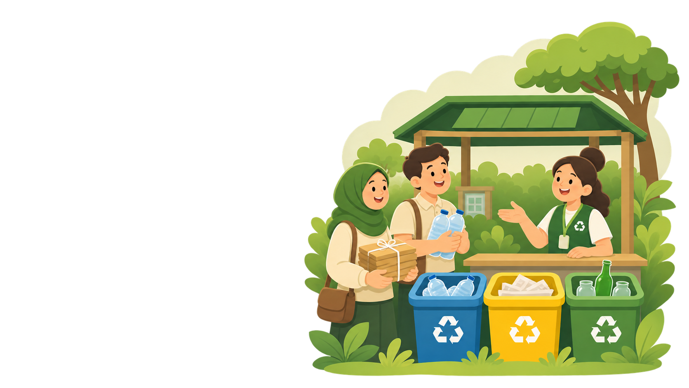

Hubungi BankSampahKu
Alamat, nomor telepon, email, dan jam operasional di halaman ini adalah contoh untuk proyek kuliah.

Jam Operasional
| Hari | Jam Buka |
|---|---|
| Senin - Jumat | 08.00 - 16.00 WITA |
| Sabtu | 08.00 - 13.00 WITA |
| Minggu & Libur | Tutup |
Simulasi Formulir Pesan
Coba isi formulir ini untuk demonstrasi. Pesan tidak dikirim.
Galeri Kegiatan BankSampahKu
Contoh kegiatan penimbangan, pemilahan sampah anorganik, dan edukasi warga.